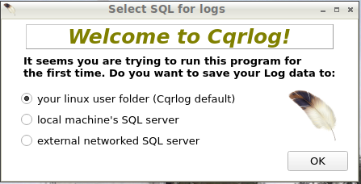

|
WARNING!
Backup your data often! BACKUP your log directory at the end of EVERY session!
All that you need to backup and store in a safe place is the log database directory
located in the ~/.config/cqrlog/database folder, or you can enable the autobackup function
in Preferences. This autobackup function creates an ADIF file with a backup of your log.
|
CQRLOG for LINUX by OK2CQR & OK1RR

Starting CQRLOG for the first time
First start of CQRLOG is important.
Thanks for opening the help to your web browser during this first run. Help has many answers to your future questions and you can open it again from many menus of CQRLOG.
We hope that you at least check now the left frame to see what topics you may find from help if needed.
Then you have to decide where you put your logs. You have three ways to save logs and each of them has it's good and bad sides.

your Linux user folder
This is the default way. If you close Select SQL for logs window, without pressing OK, this selection is used.
Log data is saved to ~/.config/cqrlog/database folder. Access to that data is done by starting a new SQL server thread for that.
This makes full backup very easy. Just copy the ~/.config/cqrlog folder with all files and subfolders. You can also move your CQRLOG to another PC that uses same version SQL engine, and has CQRLOG installed, by
just copying ~/.config/cqrlog to another PC's user folder. How ever if username (actually user ID) there is different you have to run chown command to set the ownership of all files and folders for current username.
Unfortunately using this way to save logs causes most of database connection problems with CQRLOG mostly because of modern Linux security settings.
local machine's SQL server
This option uses SQL server already installed to your machine during CQRLOG installation.
When using this option CQRLOG tries first to create SQL user with proper privileges to use the SQL server and then set proper values to "Database connection" window.
CQRLOG will create two scripts to your home folder: create_cqr_user.sh and backup_all_cqr.sh
The first one creates database user and is normally used only once. It needs your Linux user password to run this script with sudo.
The second one allows you to make full backup of all CQRLOG logs currently in database by starting this scipt in command-line terminal.
This script needs program mysqldump and cqrlog database users username and password to access database same way as CQRLOG itself does.
Backup creates allcqrlogs.sql in /tmp folder. You have to move this file to safe place because most Linuxes do clean up /tmp folder during startup.
It is also recommended to save ~/.config/cqrlog folder with allcqrlogs.sql file. Script tells you how you can restore all logs back.
CQRLOG tries to open most common terminals xterm, gnome-terminal or lxterminal to execute create_cqr_user.sh. If that fails you have to run script manually from your command-line terminal.
external networked SQL server
With this option you have to define values to connect SQL server by yourself. Address, port, user and passord are required to connect to external SQL server.
SQL user and it's privileges have to be created by SQL server administrator.
It can exist in your home network or in Internet. When using internet SQL servers it is most recommended to use VPN or SSH tunnel connection for security reasons.
After any of these options is selected, OK button pressed, and connection to SQL database established, CQRLOG tries to create first empty Log. This can take some time, so plese be patient.
When log is ready you can open it and go to NewQSO/File/Preferences to set all station details and other settings affecting to CQRLOG.
In case of local and external SQL servers there might already be a log, or logs. Then no new log is created.
NOTE: All settings are log based. You can have other logs with different settings and station information.
Once you have got all settings ready you can export them to file. It happens at CQRLOG start in Database connection window with Utils/Export/configuration.
When a new log is created you can use Utils/Import/configuration from your file to get all log settings similar with this new log.
NOTE: If you can not get one of these options work then remove ~/.config/cqrlog folder to get new fresh start. There is no need to reinstall CQRLOG.
After done that start CQRLOG again to try with another of these options. Removing this folder removes all local logs and settings!